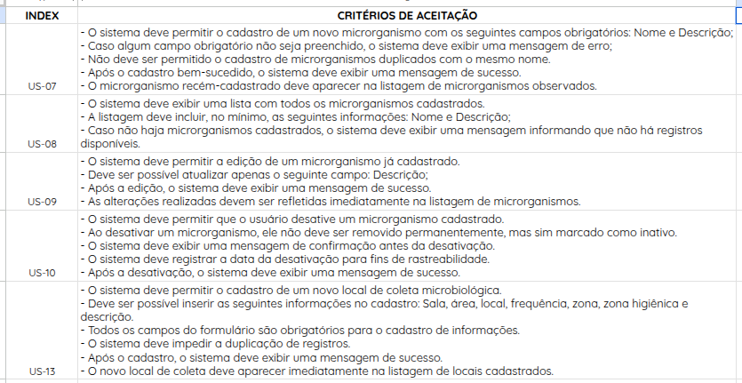
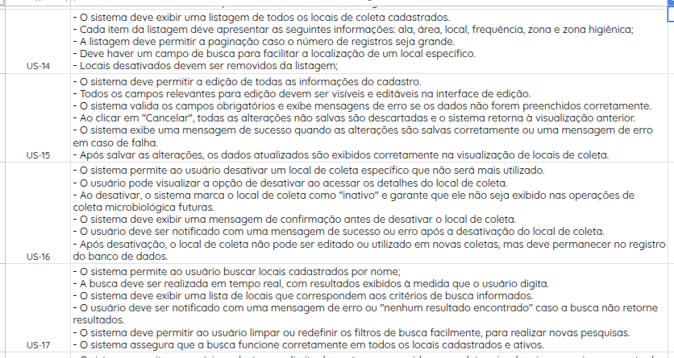

Especificação dos Requisitos
Critérios de Aceitação:
A declaração de histórias pode ser encontrada na página de Backlog do produto. Abaixo segue a relação de Histórias de usuário e critérios de aceitação:




Cenários BDD's:
Abaixo estão os cartões e as confirmações das histórias selecionadas para o primeiro ciclo de desenvolvimento do projeto:
US-07:
Cenário 1: O Usuário Realiza o Primeiro Cadastro de um Microorganismo no Banco
- Dado que um usuário deseja cadastrar um microorganismo no banco,
- Quando ele tenta realizar um registro,
- Então o sistema deverá:
- Exigir o preenchimento dos seguintes campos obrigatórios:
- Nome do microorganismo,
- Descrição,
- Limites de contagem,
- Níveis de alerta.
- Validar que todos os campos obrigatórios foram preenchidos corretamente,
- Exibir a mensagem de sucesso: "Microorganismo cadastrado com sucesso."
Cenário 2: O Usuário Tenta Realizar o Cadastro de um Microorganismo Já Cadastrado
- Dado que um usuário tenta cadastrar um microorganismo que já está registrado no banco,
- Quando ele tenta realizar o registro,
- Então o sistema deverá:
- Verificar se já existe um registro com o mesmo nome no banco de dados,
- Exibir uma mensagem de notificação: "Este microorganismo já está cadastrado no sistema. Verifique os dados ou atualize o registro existente."
US-08:
Cenário 1: O Usuário Acessa os Registros de Microorganismos
- Dado que um usuário deseja acessar os registros de microorganismos,
- Quando ele acessar a página de informações,
- Então o sistema deverá:
- Exibir uma listagem contendo os microorganismos cadastrados no banco,
- Apresentar os seguintes campos principais para cada microorganismo:
- Nome do microorganismo,
- Descrição,
- Limites de contagem,
- Níveis de alerta.
US-09:
Cenário 1: O Usuário Tenta Editar uma Informação de um Microorganismo Cadastrado
- Dado que um usuário acessa a informação de um microorganismo,
- Quando ele tenta realizar uma modificação nas informações,
- Então o sistema deverá:
- Exibir um alerta de confirmação sobre a edição de dados, como: "Tem certeza de que deseja editar as informações deste microorganismo?",
- Permitir que o usuário confirme ou cancele a ação,
- Caso confirmado, salvar as alterações e exibir a mensagem: "Informações atualizadas com sucesso."
Cenário 2: O Usuário Tenta Desativar um Microorganismo
- Dado que um usuário acessa a informação de um microorganismo,
- Quando ele tenta desativar o microorganismo observado,
- Então o sistema deverá:
- Exibir um alerta de confirmação sobre a desativação, como: "Tem certeza de que deseja desativar este microorganismo? Esta ação não pode ser desfeita.",
- Após a confirmação, desativar o microorganismo e exibir a mensagem: "Microorganismo desativado com sucesso.",
- Bloquear futuras edições nas informações do microorganismo desativado.
US-10:
Cenário 1: O Usuário é Notificado Sobre a Desativação do Microorganismo
- Dado que o usuário acessa os registros de microorganismos observados,
- Quando o usuário realiza a desativação,
- Então o sistema deverá:
- Notificar o usuário sobre a ação realizada com a mensagem: "Tem certeza que deseja realizar essa ação? A desativação deste registro implica informar para o sistema que este microorganismo não é mais observado pelo programa."
Cenário 2: O Usuário Desativa um Microorganismo Ativo
- Dado que o usuário acessa os registros de microorganismos observados,
- Quando o usuário realiza a desativação,
- Então o sistema deverá proceder com a desativação do microorganismo observado pelo sistema.
US-11:
Cenário 1: O Usuário Insere os Níveis de Alerta do Microorganismo no Sistema
- Dado que o usuário cadastra um microorganismo,
- Quando tenta realizar um registro,
- Então o sistema deverá:
- Permitir que ele insira os níveis de alerta de contagem do microorganismo conforme os possíveis limites de contagem.
US-12:
Cenário 1: O Usuário Busca um Registro de Microorganismo Específico
- Dado que o usuário acessa os registros de microorganismos observados,
- Quando realiza uma busca,
- Então o sistema deverá:
- Apresentar o registro informado na base de dados.
US-13:
Cenário 1: usuário cadastra um ponto de coleta pela primeira vez
- Dado que o usuário cadastra um local de coleta
- Quando acessa a página de registro
- Então o sistema deve apresentar um formulário para preenchimento das informações de: sala, área, Local/ Processo, Método (Campo de Descrição), Frequência (Semanal, Quinzenal, Mensal), Momento da coleta (Campo de descrição), Zoneamento por proximidade (Zona 1, Zona 2, Zona 3 ou Zona 4), Zoneamento Higiênico (Alto risco, Médio risco ou Baixo risco), Ativo? (Boolean, preenchido automaticamente no mmento do registro), Data de cadastro (preenchido automaticamente no mmento do registro)
- E receber uma mensagem de confirmação de registro caso a requisição tenha sucesso.
Cenário 2: O usuário cadastra um ponto de coleta e ocorre falha no registro
- Dado que o usuário cadastra um local de coleta
- Quando acessa a página de registro e ocorre falha na requisição
- Então o sistema deve apresentar uma mensagem de erro informando a falha da requisição.
Cenário 3: O usuário cadastra um ponto anteriormente registrado
- Dado o usuário cadastra um local de coleta anteriormente registrado
- Quando tenta concluir o registro
- Então o sistema deve apresentar uma notificação informando que o registro já existe na base de dados.
US-14:
Cenário 1: O usuário acessa a página de registros para procurar por um ponto em específico
- Dado que um usuário acessa a página de registros
- Quando tenta buscar por um ponto de coleta
- Então o sistema deve apresentar uma listagem com todos os pontos registrados ativos até então.
US-15
Cenário 1: Edição Bem-Sucedida
- Dado que o usuário esteja autenticado e na página de edição de locais de coleta avaliados,
- Quando realiza alterações nos dados do local e clicar em "Salvar",
- Então o sistema deverá:
- Salvar as alterações realizadas,
- Exibir a mensagem de confirmação: "Local de coleta atualizado com sucesso".
Cenário 2: Dados Inválidos na Edição
- Dado que o usuário esteja autenticado e na página de edição de locais de coleta,
- Quando inserir dados inválidos (ex.: Local inexistente) e clicar em "Salvar",
- Então o sistema deverá:
- Exibir uma mensagem de erro específica para o campo inválido,
- Não salvar as alterações.
Cenário 3: Cancelamento da Edição
- Dado que o usuário esteja autenticado e na página de edição de locais de coleta avaliados,
- Quando realiza alterações nos dados e clicar no botão "Cancelar",
- Então o sistema deverá descartar as alterações realizadas e retornar o usuário para a página anterior sem modificar os dados existentes.
US-16:
Cenário 1: Desativação Bem-Sucedida
- Dado que o usuário esteja autenticado e na página de desativar local de coleta,
- Quando ele selecionar um local de coleta e clicar no botão "Desativar",
- Então o sistema deverá:
- Atualizar o status do local de coleta para "Desativado",
- Exibir a mensagem de confirmação: "Local de coleta desativado com sucesso".
Cenário 2: Cancelar a Desativação
- Dado que o usuário esteja autenticado e na página de desativar um local de coleta avaliado,
- Quando ele clicar no botão "Cancelar" antes de confirmar a desativação,
- Então o sistema deverá:
- Manter o status do local de coleta como "Ativo",
- Retornar à página anterior sem efetuar nenhuma alteração.
US-17:
Cenário 1: O Usuário Busca um Registro de Local de Coleta Específico
- Dado que o usuário acessa os registros de locais de coleta observados,
- Quando realiza uma busca,
- Então o sistema deverá apresentar o registro informado na base de dados.
US-18
Cenário 1: Registro Bem-Sucedido da Contagem
- Dado que o usuário está na página de adicionar resultados do monitoramento,
- Quando preencher os campos obrigatórios (ex.: Data, Local de Coleta, Contagem de Microrganismos) e clicar em "Salvar",
- Então o sistema deverá:
- Registrar a contagem,
- Exibir a mensagem de sucesso: "Contagem registrada com sucesso."
Cenário 2: Falha no Preenchimento de Campos Obrigatórios
- Dado que o usuário tenta adicionar uma contagem de microrganismos,
- Quando deixar de preencher algum campo obrigatório,
- Então o sistema deverá exibir mensagens de erro específicas indicando os campos que precisam ser preenchidos.
Cenário 3: Tentativa de Registrar Contagem Duplicada
- Dado que o usuário já registrou uma contagem para o mesmo Local e Data,
- Quando tentar adicionar uma nova contagem com essas mesmas informações,
- Então o sistema deverá exibir a mensagem de erro: "Já existe uma contagem registrada para este local e data."
Cenário 4: Validação de Valores Inválidos
- Dado que o usuário está preenchendo o campo de contagem de microrganismos,
- Quando informar um valor fora do intervalo permitido ou inválido (ex.: texto, números negativos),
- Então o sistema deverá exibir a mensagem de erro: "Informe uma contagem válida."
US-19:
Cenário 1: Listagem Bem-Sucedida
- Dado que o usuário acessa a página de resultados do monitoramento,
- Quando clicar na aba "Contagens Registradas",
- Então o sistema deverá exibir uma lista contendo os registros de contagem de microrganismos com campos como:
- Data,
- Local de Coleta,
- Microrganismo,
- Contagem.
Cenário 2: Nenhum Registro Encontrado
- Dado que o usuário acessa a página de resultados do monitoramento,
- Quando não houver registros disponíveis,
- Então o sistema deverá exibir a mensagem: "Nenhuma contagem de microrganismos registrada até o momento."
Cenário 3: Paginação da Listagem
- Dado que o usuário acessa a página de contagens registradas,
- Quando houver mais registros do que o limite exibido por página,
- Então o sistema deverá oferecer opções para navegar entre as páginas de resultados.
Cenário 4: Ordenação Personalizada
- Dado que o usuário acessa a lista de contagens registradas,
- Quando selecionar um critério de ordenação (ex.: Data, Local ou Contagem),
- Então o sistema deverá exibir os registros ordenados conforme o critério selecionado.
US-20:
Cenário 1: Edição Bem-Sucedida
- Dado que o usuário acessa o registro de uma contagem existente,
- Quando modificar os campos necessários e clicar em "Salvar",
- Então o sistema deverá:
- Atualizar o registro,
- Exibir a mensagem: "Registro atualizado com sucesso."
Cenário 2: Falha ao Salvar Alterações
- Dado que o usuário tenta editar um registro,
- Quando ocorrer uma falha na atualização dos dados,
- Então o sistema deverá exibir a mensagem de erro: "Erro ao salvar as alterações. Tente novamente mais tarde."
Cenário 3: Cancelamento da Edição
- Dado que o usuário acessa a página de edição de um registro,
- Quando clicar em "Cancelar" antes de salvar as alterações,
- Então o sistema deverá:
- Descartar as alterações,
- Retornar para a página de visualização do registro sem realizar nenhuma modificação.
Histórico de Versão
| Data | Versão | Descrição | Autor |
|---|---|---|---|
| 15/12/2024 | 1.0 | Criação do documento | Breno Fernandes |
| 23/12/2024 | 1.1 | Adicionando especificações de requisitos | Breno Fernandes, Guilherme, Rafael, Renan, Breno Lucena e João |
| 26/12/2024 | 1.1 | Adicionando nomes aos RFs nas especificações | Breno Fernandes, Guilherme, Rafael, Renan, Breno Lucena e João |